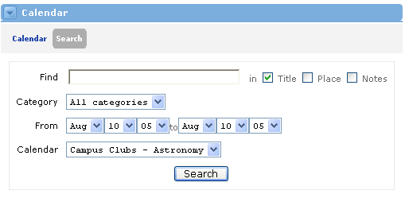

Calendar Search :Locating Events
:Locating Events
To search for scheduled events, simply locate the Calendar channel and click the Search link located at the top of the channel. The following Search screen will be displayed:

To perform a search, simply follow these steps:
- Enter the search text in the Find field.
- Now select which field of the Event that this search should take place: Title, Place, and/or Notes. You can search in more than one place.
- Choose a Category for your search (if desired).
- To refine the search to a specified time span, enter the dates in the From and To fields.
- The Calendar field will default to the title of this offering. No other selection options will be provided in this view.
- Click the Search button to begin the search.